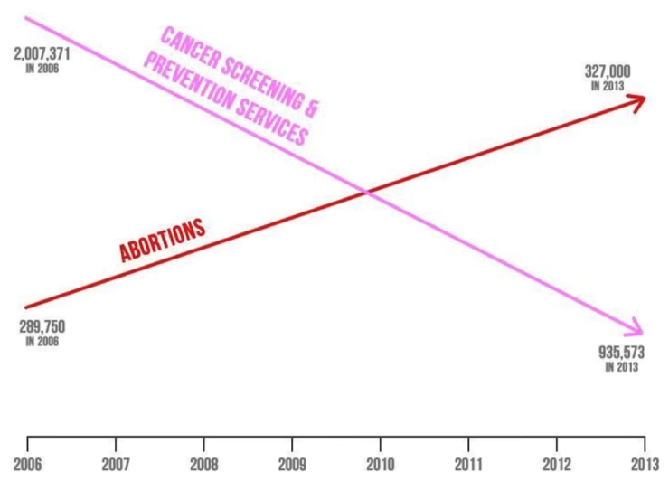
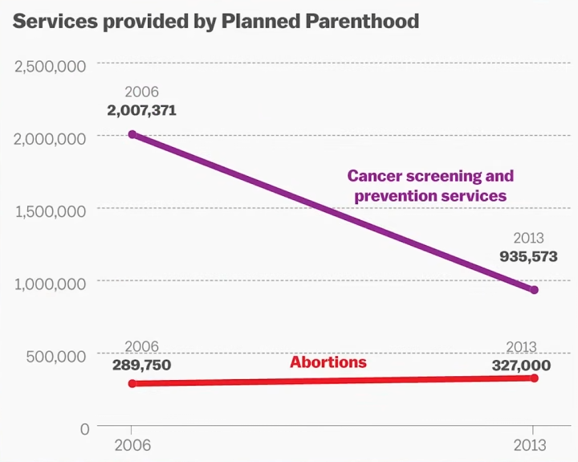

Στην πραγματικότητα ένα γράφημα σαν αυτό είναι πιο ακριβές και καθιστά σαφές πως δεν υπάρχει καλή σχέση μεταξύ των μεγεθών που απεικονίζει. Αυτό πιστεύω είναι ένα καλό παράδειγμα του πόσο σημασία έχει ο τροπος που παρουσιάζονται δοδομένα και συγχρόνως πόσο εύκολα μπορεί να την "πατήσει" κάποιο άτομο αν δεν διαβάζει προσεκτικά τις πληροφορίες που αντικρίζει.
← Back to HomeΟ εκπρόσωπος της Γιούτα, Jason Chaffetz, το 2015 παρουσίασε το διπλανό γράφημα σε ακρόαση του Κογκρέσου σχετικά με την προγραμματισμένη χρηματοδότηση του Οικογενειακού Προγραμματισμού. Είναι εμφανές ότι το γράφημα αυτό είναι παραπλανητικό, καθώς η κλίμακα Υ δεν ακολουθεί κάποιο κανόνα και τα βέλη αντί να απεικονίζουν την πραγματική σχέση των μεγεθών μεταξύ τους αποτυπώνουν μια αφηρημένη τάση τους.
